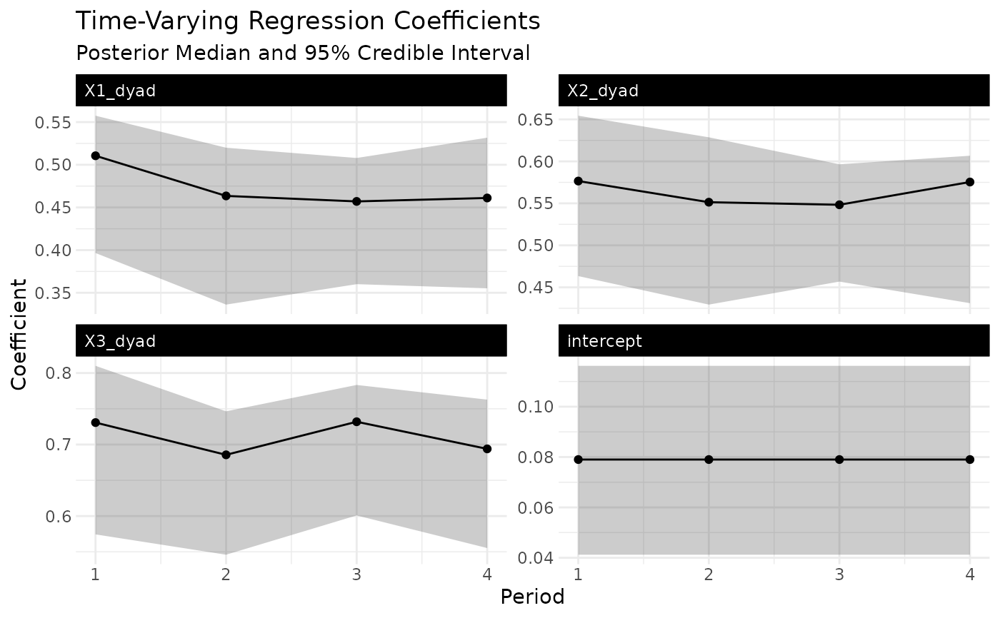

Ribbon plot of time-varying coefficients (or coefplot for static fits)
Source:R/autoplot_lame.R
autoplot.lame.RdFor a lame fit with dynamic_beta on, returns a faceted
ggplot of the posterior mean coefficient path per period with a 95
percent credible-interval ribbon. For a static fit (no
dynamic_beta), falls back to a tidy()-driven horizontal
coefplot with posterior-mean point estimate and credible-interval
bars so that autoplot(fit) returns a ggplot regardless of fit
type.
Arguments
- object
A fitted
ame/lameobject.- which
One of
"beta"(default; coefficient plot — ribbon when dynamic, coefplot when static),"ab"(sender / receiver effects whendynamic_ab),"uv"(latent positions whendynamic_uv).- probs
Length-3 vector of quantiles to plot. Default
c(0.025, 0.5, 0.975)for 95 percent intervals.- coefs
Optional character vector of coefficient names to subset.
- ...
Ignored.
Examples
# \donttest{
data(YX_bin_list)
fit <- lame(YX_bin_list$Y, YX_bin_list$X, family = "binary", R = 0,
dynamic_beta = "dyad",
nscan = 200, burn = 50, odens = 5, verbose = FALSE)
#> Warning: `family` = "binary" but `Y` contains values other than 0/1.
#> ℹ `Y` will be thresholded to `1 * (Y > 0)`; if you meant counts, use "poisson",
#> or "ordinal"/"normal" as appropriate.
if (requireNamespace("ggplot2", quietly = TRUE)) {
autoplot(fit)
}

# }